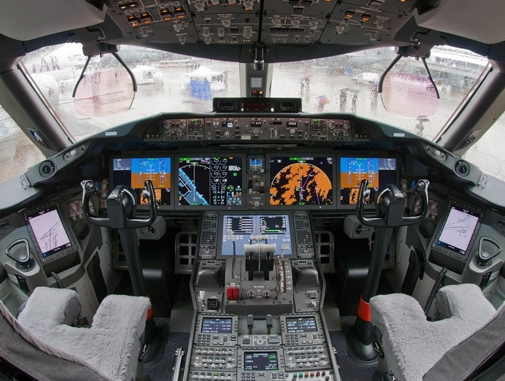

The Boeing 787 Dreamliner is a long-haul, widebody, twin-engine jetliner. The 787 is the first commercial aircraft to have an airframe majority made of carbon fiber reinforced polymer (CFRP), applied in: the empennage, fuselage, wings, doors, and in most other main components. Each 787 contains approximately 77,000 pounds (35 metric tons) of CFRP, made with 51,000 lb (23 t) of pure carbon fiber. CFRP materials have a higher strength-to-weight ratio than conventional aluminum structural materials, which contributes significantly to the 787's weight savings,[200] as well as superior fatigue behavior.
The Boeing 787 Dreamliner is a long-haul, widebody, twin-engine jetliner. The 787 is the first commercial aircraft to have an airframe majority made of carbon fiber reinforced polymer (CFRP), applied in: the empennage, fuselage, wings, doors, and in most other main components. Each 787 contains approximately 77,000 pounds (35 metric tons) of CFRP, made with 51,000 lb (23 t) of pure carbon fiber. CFRP materials have a higher strength-to-weight ratio than conventional aluminum structural materials, which contributes significantly to the 787's weight savings,[200] as well as superior fatigue behavior.
 Aluminum has been used throughout the leading edges of wings and tailplanes, titanium is predominantly present within the elements of the engines and fasteners, while various individual components are composed of steel.
External features include a smooth nose contour, raked wingtips and engine nacelles with noise-reducing serrated edges (chevrons). It's just an unexplicably handsome creation on the outside. The longest-range 787 variant can fly up to 7,635 nmi (14,140 km), or the even longer Qantas QF 9 flight between Perth Airport and London–Heathrow, over 7,828 nmi (14,497 km). Its cruising airspeed is Mach 0.85 (488 kn; 903 km/h). The aircraft has a design life of 44,000 flight cycles.
Aluminum has been used throughout the leading edges of wings and tailplanes, titanium is predominantly present within the elements of the engines and fasteners, while various individual components are composed of steel.
External features include a smooth nose contour, raked wingtips and engine nacelles with noise-reducing serrated edges (chevrons). It's just an unexplicably handsome creation on the outside. The longest-range 787 variant can fly up to 7,635 nmi (14,140 km), or the even longer Qantas QF 9 flight between Perth Airport and London–Heathrow, over 7,828 nmi (14,497 km). Its cruising airspeed is Mach 0.85 (488 kn; 903 km/h). The aircraft has a design life of 44,000 flight cycles.
The 787 is powered by two engines, which use all-electrical bleedless systems taken from the Sonic Cruiser, eliminating the superheated air conduits normally used for aircraft power, de-icing, and other functions.

 The 787 has a "fly-by-wire" control system similar in architecture to that of the Boeing 777. The flight deck features multi-function LCDs, which use an industry-standard graphical user interface widget toolkit (Cockpit Display System Interfaces to User Systems / ARINC 661).The 787 flight deck includes two head-up displays (HUDs) as a standard feature.Like other Boeing airliners, the 787 uses a yoke (as opposed to a side-stick). Under consideration is future integration of forward-looking infrared into the HUD for thermal sensing, allowing pilots to "see" through clouds. Lockheed Martin's Orion spacecraft will use a glass cockpit derived from Honeywell International's 787 flight deck systems.